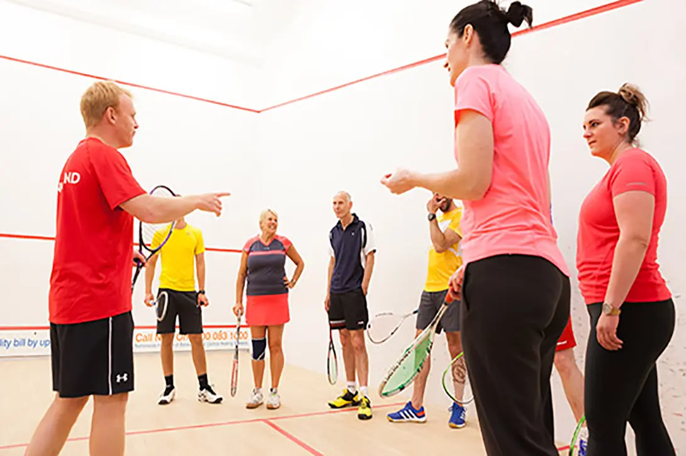
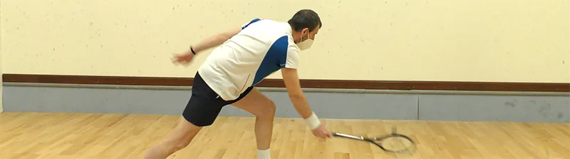

Things To Do To Get The Most From Coaching
You might think that you just need to arrive at the court, listen to the coach and suddenly you will become the club number one. Sorry, but it doesn’t work like that.
Wouldn’t it be nice to simply go to squash lessons and improve? You made the effort to book the lesson, that’s enough, right? WRONG! If you want to get the most out of lessons, follow the points below. This is the second of three in my short Coaching series.
Listen carefully
Arrive Early
Rushing, not heating up properly, thinking about work, family, school etc all detract from your task: To learn and improve. Being late is even worse – that’s lost time, that you have paid for. Sure, sometimes things happen are you are late, just make sure it doesn’t happen often. Learning requires a calm and focused state of mind. If you are checking your mobile phone or not physically ready to do the work, you are wasting time.
You might not think that coaching is learning, that it is just hitting the ball. But you ARE learning, you are taking in new information and processing it. Any distractions will imped that process and make it less efficient. Ideally, I want you to sit down before going on court to think about what you need to discuss with the coach. For example, what information you can give them about your squash between this lesson and the previous one. I’m not asking for a 5-minute presentation, just something to keep the process of communication as effective as possible. Remember, the coach will almost certainly start with a question any way, something like “How’s the backhand?“. Having thought about it before will help give you a better answer.
Like everything; the better you prepare, the better your performance; and that includes learning.
Make Notes – Yes, Seriously
I recommend you make some simple notes immediately after your squash coaching lesson. OMG, who makes notes after a coaching session? Why? Well, firstly, research has shown that the action of writing something down helps you remember↗. So that in itself is enough reason, but also, having bullet list of things you have worked on during your lessons can help you realise how much you have improved. Sure, actual on-court results show that too, but notes make it feel more deliberate.
I’m not asking you to write hundreds of words after each lesson, just some simple bullet points. You should also write down any “homework” the coach gives you. It will help ensure you know exactly what you need to do, when you have to practice between lessons. The notebook can be used for recording observations of players during tournaments too, but that’s for another article.
The final point is that knowing that you need to write the bullet points down, often encourages us to listen better and pay more attention to what is being said.
It’s like a loop: listen better, write it down, do it, improve, listen better and so on.
Here's me trying to get low
Schedule Practice Time And Stick To It
If you are working on a technical aspect with your coaching, you need time alone on court to practice that. Not for too long because that doesn’t help. Short and often is better than one long session. Booking a 40/45 minute court for solo practice can be too much for many players, in which case, when you book a court for a friendly, ask you partner, if you can spend the first ten minutes both doing solo work.
Perhaps you need to work on tactical aspects of your game, in which case, go with the frame of mind that you are NOT trying to win, but trying IMPROVE. Referring to your notes, you might find that your coach asked you to play a few more straight drives in a rally before you become more attacking. reading that before you play gives you a clear and in some cases a measurable objective when training.
Setting aside specific times to train and improves is easy for me to type, but it might not be so easy to do. In that case, perhaps it’s better to space out your lessons to ensure you have enough time to work on the things that the coach has asked you to do. Ideally, you should be on court twice with the specific intention of training and improving BEFORE you go back to0 the coach for more lessons.
Don’t just expect to improve. Schedule time for purposeful practice.
Ask Questions
As I mention in part 1 of this coaching series, working with a coach is a relationship with interaction. When you have doubts about something the coach has said, do not be afraid to ask. Asking a question now can save a lot of time and trouble later. You don’t simply go on court and absorb the knowledge from the coach. Asking question will highlight gaps in the coach’s explanation. it will allow the coach to ensure that you are told what you need to know.
Never be afraid or ashamed to admit you don’t know something. If you don’t understand something, tell your coach.
Commit To Improving
Will all want to improve. Most want the asy way, which for many people seems to be buying a new racket! The reality is that it’s easy to improve our squash: it’s just hard work. And most people don’t want to work hard. They just want to play, and I get that. I do, I really do. But if you are going to have coaching, then commit to the whole process of improvement; coaching, solo drills, pairs drills, conditioned games, fitness, everything!
Sure, you can go and have a few lessons to see if you lie the coach or if it’s what you want to do, but once you commit, really commit. I say for 6 weeks. 6 weeks of hard work and you will really see a jump in your game. No, I can’t guarantee that, but assuming you are working ont he correct things, then you WILL improve.
Often the difference between players who improve is not talent or luck, it is consistent smart and hard work. Try it, you may surprise yourself!
Continue Reading
• Previous: Things To Know Before You Have Coaching
• Next: Things To Do If You Can’t Have On-Court Coaching
• Random: Take A Chance!
• Popular: Why Do Professional Squash Players Touch The Side Wall before Serving?